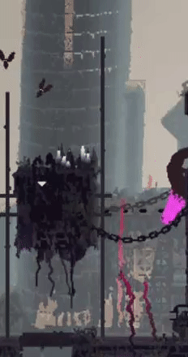

Egy Szeretett Játékom
A Legkedvencem játékommat nem tudom eldönteni. Szóval csak Egy Szeretett játékom.
Rain World Egy nam anyira ismert Remek de nehéz játék.
A Játék egy Slugcat-röl szól aki ell let szakitva a csalágyától az ;ESŐ által.
Ez a Slugcat a táplálék lánc aján találja magát. Egyedül a családja nélkül. A túlélés kihívást jelent.
Az első két fő elensége:

Én ezt a játékot az élő világa miat szeretem a leg jobban.;
A játékban a sok élőlény animációja reactiv és folyékony, és helyben generált.LINK
Ez egy különleges játék. De nem mindenkinek, pl Játékritikusok akik nem tudnak játszani. De nekem Bejött.